11. Logotipo Volkswagen¶
Abrimos un nuevo documento con Inkscape.
Copiamos el logotipo de más arriba en Inkscape para que nos sirva de modelo.
Dibujamos un triángulo invertido, mientras pulsamos la tecla Control para asegurarnos de que sea perfectamente vertical.
Con la herramienta de selección nos aseguramos de que el triángulo coincida exactamente con el logotipo.
Recuerda pulsar la tecla Shift
 mientras cambias el
tamaño horizontal para que la figura cambie de anchura de forma
simétrica.
mientras cambias el
tamaño horizontal para que la figura cambie de anchura de forma
simétrica.Recuerda pulsar la tecla Control
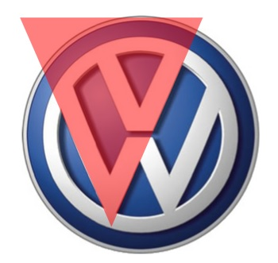 mientras cambias el
tamaño vertical del triángulo para que no cambie el ángulo que forma
la uve.
mientras cambias el
tamaño vertical del triángulo para que no cambie el ángulo que forma
la uve.Ahora duplicamos el logotipo (teclas Control+D) y lo desplazamos en vertical mientras pulsamos la tecla Control para asegurarnos de que no se desplaza hacia los lados.
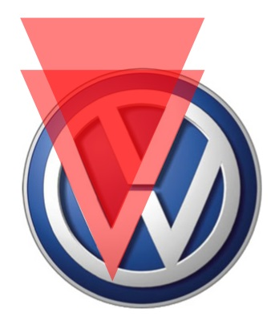En este punto podemos restar un triángulo del otro con el menú
Trayecto... Diferencia, con lo que aparece una de las dos uves del logotipo.
Duplicamos la uve (teclas Control+D) y la desplazamos horizontalmente mientras presionamos la tecla Control para que no se desplace en vertical.
La posición debe coincidir con el logotipo inferior.
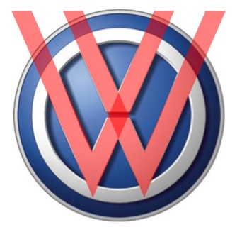Seleccionamos las dos uves recién creadas y las unimos en un solo trayecto con el menú
Trayecto... UniónAhora dibujamos un círculo verde transparente que coincida con el círculo interior en el que está inscrita la doble uve.
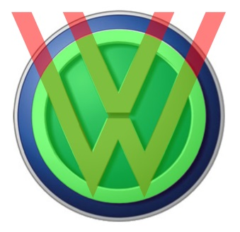Para recortar el dibujo tenemos dos opciones.
Seleccionamos las V y el círculo y en el menú
Objeto... Recorte... Aplicar.O bien seleccionamos la doble uve y el círculo y en el menú
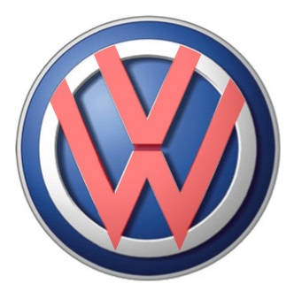Trayecto... IntersecciónLa pequeña separación entre la V superior y la W inferior la podemos realizar dibujando un rectángulo en el lugar apropiado.
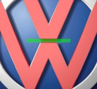Después seleccionamos la doble uve y el rectángulo y en el menú
Trayecto... Diferencia. Ya tenemos la V pequeña separada de la W inferior.Ahora vamos a dibujar otro círculo que coincida con el borde exterior del círculo donde están inscritas las letras.
Duplicamos este círculo (teclas Control+D) y, presionando las teclas Control y Shift para mantener las proporciones, hacemos el círculo duplicado más pequeño hasta el borde interior del círculo del logotipo.
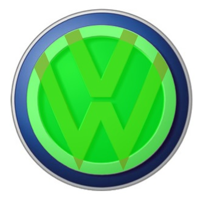Restando los dos círculos con el menú
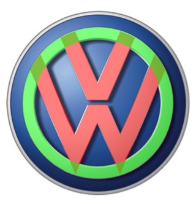Trayecto... Diferenciatenemos una circunferencia como la del logotipo.Para continuar seleccionamos la circunferencia y las letras V y W. En el menú
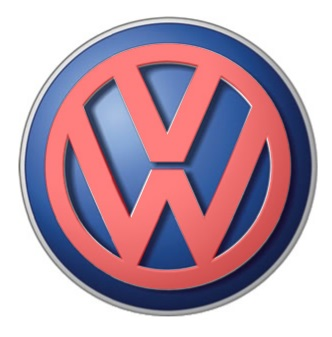Objeto... Alinear y distribuircentramos los dibujos y unimos todo con el menúTrayecto... UniónAhora realizamos la misma operación anterior con la circunferencia más exterior del logotipo.
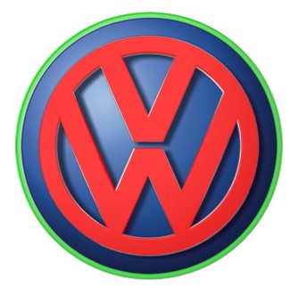Duplicamos el dibujo interior y le unimos con la circunferencia exterior en el menú
Trayecto... Unión.Y podemos separar este dibujo del logotipo que nos sirve de modelo.
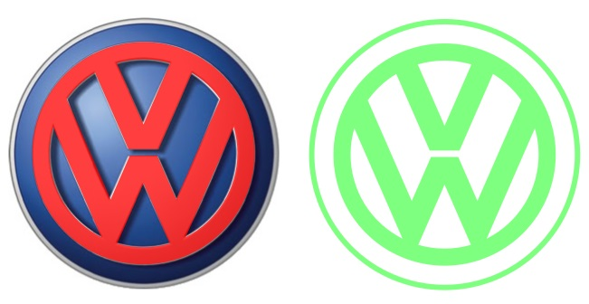Añadimos un círculo azul con las mismas dimensiones que el dibujo recién separado y nos aseguramos de que esté correctamente centrado.

El círculo azul debe ir al fondo. Escogemos en el menú
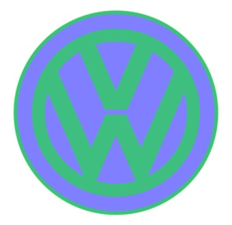Objeto... Bajarpara que se vea el círculo azul en el fondo.Ahora seleccionamos el dibujo verde y cambiamos su color de relleno por un degradado radial con el centro de color blanco y el exterior de color gris.
Objeto... Relleno y borde...Pestaña de Relleno... Degradado radial.Herramienta de edición de degradados 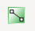
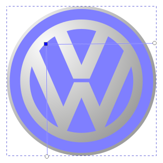Para continuar debemos seleccionar el círculo azul que se encuentra debajo del dibujo que acabamos de editar. Para seleccionar el círculo podemos presionar varias veces la tecla de tabulación
 .
.Otra opción es elegir en el menú la opción
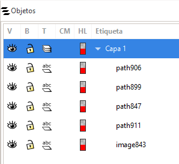Objeto... Objetos...y aparecerá la siguiente ventana a la derecha con todos los objetos que están actualmente en Inkscape. En esta ventana podemos pinchar sobre el objeto que nos interese para seleccionarlo, podemos cambiar su nombre, cambiar el objeto de capa mostrar y ocultar el objeto o bloquear y liberar el objeto.Una vez seleccionado el círculo azul, cambiamos su color de relleno por un degradado radial, blanco en el centro y azul oscuro en el exterior.

Ahora escogemos uno de los dibujos que habíamos duplicado anteriormente.

Cambiamos su color por negro con transparencia al 75 y desenfoque 15.
El desenfoque se escoge con la barra horizontal que se encuentra debajo de los colores de relleno.
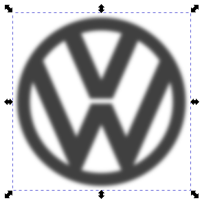Ahora podemos superponer la imagen negra sobre el logotipo con un poco de desplazamiento hacia abajo a la derecha.
Para que Inkscape no intente hacer coincidir los dos dibujos es necesario quitar temporalmente la herramienta de 'Ajustar nodos, trayectos y tiradores' 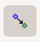 situada en la barra de herramientas de la derecha.
Bajamos el dibujo de sombra negra una posición hacia abajo con el menú
Objeto... Bajar`.
Para terminar vamos a dibujar un círculo (presionando Control). Cambiaremos su relleno a ninguno y su trazo a gris oscuro con un estilo de trazo de 0,4 milímetros de grosor para conseguir la circunferencia de la imagen.
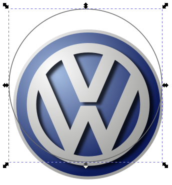Con la herramienta de seleccionar y con las herramientas de alineación colocaremos la circunferencia en el exterior del logotipo.
Todavía se podrían hacer más ajustes en los degradados y en los bordes de las figuras para darle más sensación de tres dimensiones, pero por el momento vamos a dar el logotipo por terminado.